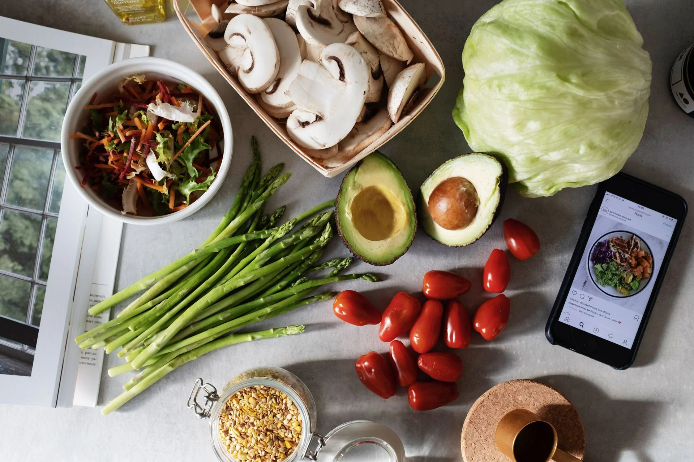

Imagem ilustrativa · não retrata o local ou a equipe01 / Nutrição · São José do Rio Preto
Comer bem. Sem abrir mão do que você gosta.
Thaís Pillotto. Alimentação saudável com espaço para o que você gosta. Um acompanhamento que considera a sua rotina e a sua relação com a comida.
- CRN 27019
- Mestre em Psicologia e Saúde
- Rua Imperial, 237
 Imagem ilustrativa · não retrata o local ou a equipe
Imagem ilustrativa · não retrata o local ou a equipe02 / Alimentação na vida real
Nutrição que conversa com a sua vida.
Reeducação alimentar
Mudanças possíveis no dia a dia, respeitando necessidades e hábitos individuais.
Planejamento nutricional
Escolhas alimentares adaptadas à rotina, sem exigir que toda a família siga o mesmo plano.
Diabetes e alimentação
Orientação nutricional individualizada, em conjunto com o acompanhamento médico.
Alimentação vegana
Planejamento de refeições e atenção a nutrientes como proteínas, ferro, cálcio e vitamina B12.
Relação com a comida
Um olhar para os aspectos alimentares e comportamentais, reconhecendo a importância do cuidado multiprofissional.
Saúde ao longo da vida
Educação alimentar sobre saúde cardiovascular, infância e escolhas que cabem na vida real.
 Imagem ilustrativa · não retrata o local ou a equipe
Imagem ilustrativa · não retrata o local ou a equipe03 / Trajetória & cuidado
Alimentação e comportamento no mesmo olhar.
Thaís Pillotto é nutricionista e mestre em Psicologia e Saúde. Em seus conteúdos, aproxima alimentação e comportamento: fala sobre recomeçar sem culpa, respeitar os hábitos de cada pessoa e encontrar variedade nas escolhas do dia a dia.
- Formação que conecta nutrição, psicologia e saúde
- Reeducação alimentar sem impor a mesma dieta a toda a família
- Conteúdos sobre trocas alimentares, diabetes e alimentação vegana
 Imagem ilustrativa · não retrata o local ou a equipe
Imagem ilustrativa · não retrata o local ou a equipe04 / Seu próximo passo
Vamos conversar?
São José do Rio Preto/SPConversar pelo WhatsApp ↗
Ver mapa do endereço +
Consulte os horários disponíveis pelo WhatsApp.
Nutricionista · CRN 27019 · São José do Rio Preto/SP